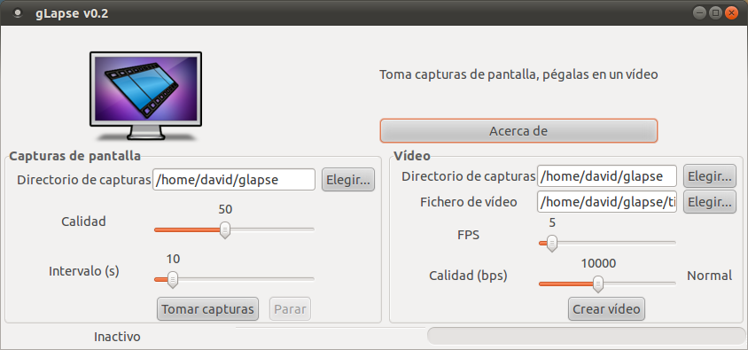

gLapse: take screenshots, glue them together
Jun 1, 2011 · 2 minute read · CommentsProjects
Several days ago I was a bit tired of working on IberOgre, the Spanish Ogre wiki so I started procrastinating. Then I discovered the Ludum Dare 48h game development competition and I was amazed about the idea. Lots of developers use to record their progress in time lapse videos to show how their mini games evolved. There are very good Windows tools to do that but on GNU/Linux systems you have to use command line scripts and that’s where gLapse comes into play.
What is gLapse?
gLapse is a visual GNU/Linux tools to take desktop screenshots at a fixed custom time interval and them glue them together to make a time lapse video. It can be used to show your progress in any project you"re working on. It doesn’t have too many features but hey, the bright side is that gLapse is extremely easy to use.
It’s written in Python using pyGTK and Glade as GUI designing tool. Internally it uses ffmpeg to encode video and scrot to take screenshots. Feel free to use it as you wish since it’s licensed under the GPL v3 license.

Features
I released gLapse 0.1 two weeks ago and gLapse 0.2 launched two days ago, the following list shows the features it has now:
- Take .png screenshots with custom quality and time interval.
- Make videos using saved screenshots with custom quality and FPS.
- Multilanguage: English, Spanish and German.
If you happen to find any kind of problem using gLapse or have a feature request, please go directly to the issues section at Google Code. Contributions are hugely welcome!
Downloads
What’s next?
I’ve been thinking a lot about improving gLapse and here are some possible new features for next versions:
- Webcam time lapse support.
- Additional languages: French, Portuguese or Italian.
- …